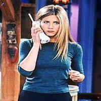
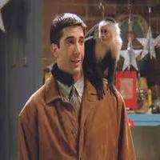
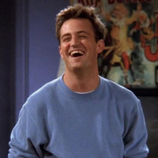
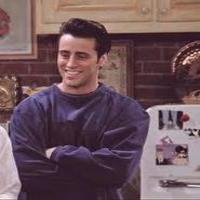
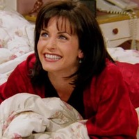

First Character Rachel "Green":Introduced in the show's pilot as a naive runaway bride who reunites with her childhood best friend Monica and relocates to New York City, Rachel gradually evolves from a spoiled, inexperienced "daddy's girl" into a successful businesswoman.
Second Character Ross "Geller":Ross is a paleontologist and has a Ph.D. from Columbia University. An ongoing theme of his narrative arc is his romantic feelings toward Rachel Green, an infatuation that began in high school. A theme of Friends is their on-again, off-again romantic relationship.
Third Character Chandler "Bing": Chandler works as an IT procurements manager with the specialization "Statistical analysis and data reconfiguration," but loathes it. In Season 9, he quits his job and Monica helps him start a new career in advertising.
Fourth Character Joey "Tribiani":Joey is a member of the Screen Actors Guild,[6] having refused to follow in his father's footsteps and become a pipe fitter.He started his acting profession doing stage work, introduced in the show's pilot episode by Monica and Chandler having seen Joey in a production of Pinocchio.
Fifth Character Monica "Geller":A hardworking chef. Monica is introduced in the pilot as one of five close-knit friends who live in New York City, including her older brother Ross,neighbors Joey and Chandler, and former roommate Phoebe.When her privileged, inexperienced childhood best friend Rachel.
Sixth Character Pheobe "Buffay":In the pilot episode,Phoebe is introduced as one of the six original friends,including neighbors Joey and Chandler,former roommate Monica,Rachel Green,and Monica's brother,Ross.She is a musician at their typical meeting place,Central Perk,where she plays guitar and sings self-written songs